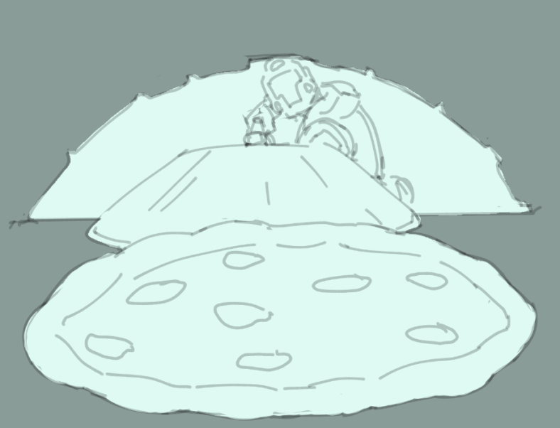

Executioner Apple cobbler

A highly favored dessert in the mess halls of the Aeolan Confederacy. Just as sweet and rich as the victory that warranted the feast.
- Makes: 4-8 servings
Ingredients:
- 4 apples (granny smith or whatever) slice into quarter inch or so pieces
- 1 cup water or apple juice
- 1/3 cup brown sugar , packed
- 1 Tablespoon cornstarch
- 1 Tablespoon lemon juice
- 1/2 teaspoon vanilla extract
- 1 teaspoon ground cinnamon
- 1/2 teaspoon ground nutmeg
- 1/8 teaspoon salt For the batter:
- 1 cup all-purpose flour
- 1 cup granulated sugar
- 2 teaspoons baking powder
- 1/4 teaspoon salt
- 3/4 cup milk
- 5 Tablespoons butter , melted
- ground cinnamon for topping
Directions:
Apple Filling:
- Stir together water, brown sugar, cornstarch, lemon juice, vanilla, cinnamon, nutmeg, and salt in a large saucepan.
- Stir in apples.
- Cook over medium heat for 3-5 minutes.
Batter:
- In a large bowl mix together the flour, sugar, baking powder, and salt.
- Stir in the milk and melted butter, just until combined.
Assembly:
- Pour the apple filling into whatever oven safe dish will fit it and then pour the batter over it.
- Sprinkle some cinnamon and bake at 400 for 45 minutes or until a knife inserted into the middle passes through clean.